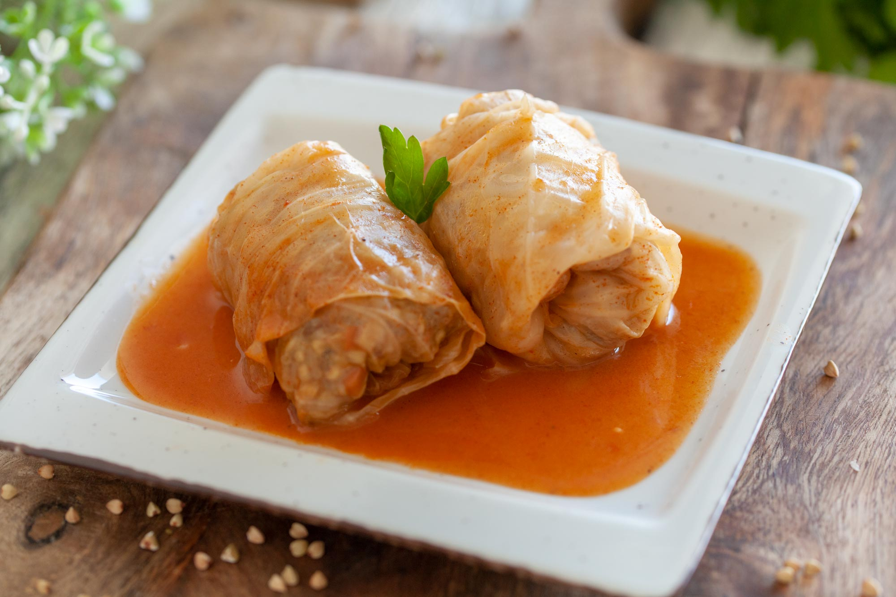

Cabbage Rolls

A cabbage roll is a dish consisting of cooked cabbage leaves wrapped around a variety of fillings. It is common to the cuisines of Central, Nothern, Eastern and Southeastern Europe and much of Western Asia.
Meat fillings are traditional in Europe and include beef, lamb or pork seasoned with garlic, oniaon and spices.
Ingredients
- Leaves of brined cabbage
- Ground beef
- Pork
- Rice
- Smoked bacon
- Paprika
- Salt, pepper and other spices
Steps
- Caramelize some onions on the pan
- Add cooked rice
- Add 50/50 mixture of pork and beef minced meat
- Cook it until meat is nearly done
- Roll mixture in cabbage leaves
- Fill up the pot with cabbage rolls and cover them with some water
- Add smoked bacon and spices for taste
- Put the pot in the oven at 190 C for 4 hours